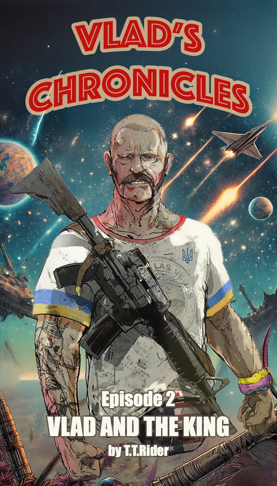

Vlad’s Chronicles
by T.T.Rider
Episode 2
Vlad
and
The King
Disclaimer
The novels of Vlad's Chronicles are an exclusive comedic journey tailored specifically for the delightful members of the Hopperverse
If you stumbled upon these adventures by accident, be warned: Vlad’s galaxy-hopping escapades, gummy-fueled rulers, and questionable fashion sense may seem more perplexing than trying to explain interstellar BBQ etiquette to aliens.
Non-club members risk bouts of laughter-induced confusion, mild existential crises, or sudden cravings for Ukrainian gorilka.
Read responsibly, and remember—without
Coffee with Christopher
context, Vlad’s misadventures make about as much sense as a fanny pack
in space.
This novel is a wild ride of fiction!
Any names you stumble across, especially those that sound like they belong to Hopperverse members or die-hard Coffee with Christopher fans, as well as the characters, places, and shenanigans within, are purely figments of the author's imagination—trust me, it's a pretty bizarre place!
If you happen to see any resemblance to actual
events or real people (photos included!), it’s entirely by
accident—not a conspiracy!
Seriously, just dive into this chaotic world, have a blast, and keep in mind that the author is just here to sprinkle a little ridiculous fun into our otherwise serious lives.
Enjoy the laugh riot!
Previously in 'Vlad's Chronicles' [https://www.ttrider.com/vc/]
It’s been ages since Earth was torn apart by merciless alien invaders who stole its most precious treasure—its people. After the war against those invaders ended, humanity found itself stranded, unable to return to their home planet. But being a tough and adaptive species, humans spread out across the galaxy and claimed it as their own. Throughout all these years, Vlad, the hero of that fateful war, has wandered from one star system to the next, chasing the slim hope of reuniting with the woman he believes to be his true love.
During his travels, Vlad stumbled upon a world under the rule of Big G-Nubz, a wise and respected leader. For the first time, Vlad felt like he’d discovered a place in this vast galaxy he could truly call home. But the galaxy’s endless expanse beckons, and he knows his love might still be out there somewhere. So once again, Vlad takes to the stars, ready for whatever lies ahead.
"What the splick is this place?!" Vlad burst out as his trusty spaceship slipped into standard space. Right in front of him sprawled a planet that seemed livable, but it wasn’t the planet that left him wide-eyed. No, it was the line of billboards floating out there in the void, stretching from his entry point all the way to the planet like some kind of interstellar highway.
Each billboard showcased bizarre creatures in varying stages of culinary preparation. The first advertised boldly:
"29.99 for All Spunzy You Can Eat!" The image displayed a heap of odd little critters that resembled a mash-up of tiny horses and fish.
Another declared, "Soup from Zullybeck! It’s to die for!" Though Vlad had no clue what—or who—this "Zullybeck" might be, it didn’t sound entirely reassuring.
Other signs promoted tours:
"Free tours to the Anaoput farm. Pick your own Anaoput for dinner."
Whatever an Anaoput was, Vlad figured he'd find out soon enough.
The advertisements kept coming, offering everything from hunting expeditions to more exotic dining options. It reminded Vlad an awful lot of that long stretch of highway leading to Las Vegas—a place he always held dear. But instead of promising casinos and beautiful women, these adverts focused on food... and not the kind you’d find back on Earth.
As his ship got closer, one particular billboard caught his attention. This one felt more up his alley: a group of stunning women posed suggestively, looking like they’d stepped right off a Hooters poster. The ad read:
"Unforgettable adventure! Hunting trip with your own beautiful guide. You score no matter what!"
But the most eye-catching message of them all was plastered across the largest billboard in sight:
"There is no B.B.Q. like the King’s B.B.Q.!"
The sign was decked out with slices of unrecognizable meats arranged in a design bursting with patriotic flair—stars, stripes, and colors straight off the American flag. Vlad had to admit, it was all equal parts absurd and intriguing.
Touching down the spaceship on the assigned pad was a breeze. Vlad glanced at the sign posted near the lot and let out a chuckle. It read: "Parking’s free with the King’s validation. Otherwise, get ready to cough up some serious cash."
"Smart business," Vlad muttered under his breath.
As he stepped outside, his senses were hit hard by the intense aroma of unfamiliar spices and roasted meats. The air seemed saturated with the essence of food, as if the entire area was one giant celebration of that deep, universal craving—eating.
"Guess it’s time to pay this King guy a visit," Vlad decided. He slung his rifle securely over his back, gave his handgun a quick check, and started heading toward the massive building that could only belong to the King. It loomed over the cityscape like a monarch overlooking its domain, with a bold banner proudly repeating what he’d already seen plastered in the space: "Nobody does B.B.Q. like the King!"
The smell was so intense, Vlad's stomach practically screamed for attention. He needed to get some food in him right now!
As Vlad stepped into the palace, he found himself in what looked like a laid-back restaurant—exactly the kind of vibe he preferred. The place was a chaotic yet cozy blend of a dive bar, a family-owned grill, and a high-stakes gambling den, all rolled into one. The air carried the scent of sizzling meats, charred just enough to make his stomach growl, mixed with the unmistakable bite of something strong and distilled. Dim, colorful lights flickered overhead, some clearly repurposed from old starships, casting long shadows against walls lined with battered neon signs advertising drinks from a dozen different systems.
Rough-hewn wooden tables were packed with a variety of patrons: weary traders nursing their drinks, off-duty mercenaries exchanging war stories, and the occasional shady figure hunched over a steaming plate of something unidentifiable. The bar itself was a sight to behold, its counter littered with empty glasses, grease-streaked menus, and the occasional dent from a recent bar fight.
A massive holo-screen in the corner played what looked like an intergalactic wrestling match, the roar of the crowd barely audible over the hum of conversation and the occasional clatter of plates. At the far end of the room, a few Jujari warriors sat in a booth, their ears twitching as they eyed the newcomers like they were debating whether to challenge or ignore them.
The casual setting put Vlad at ease, but his gnawing hunger was another story. He was ready to devour anything that came his way, even something called Anaoput—whatever that might be.
A striking young Jujari woman with feline grace and a name tag reading "Annika" approached him with a welcoming smile. “Table for one? Or are you more of a bar guy? We just got a fresh shipment of Dunkelbranntstoffer. The Boss swears it’s the best vodka stand-in across the galaxy!”
“Bar’s fine,” Vlad replied without hesitation. “Anything close to vodka can’t be all bad.”
As they made their way over, Vlad caught sight of an intriguing six-armed bartender deftly juggling the mixing of four drinks at once. The bartender’s species was anyone’s guess, but his skills were undeniable. Anika called out as they reached the counter, “Hey Zbrundy! This heavily armed gent here with the quirky fanny pack wants himself some Dunkelbranntstoffer.”
“A full glass,” Vlad added confidently as he slid onto a stool.
Zbrundy glanced at him and chuckled darkly. “Your funeral,” he said before filling a tall glass with the crystal-clear spirit.
Vlad raised the glass, muttering “Budmo!” before knocking it back in one swift motion. The room collectively paused, half expecting him to keel over or at least grimace from the drink’s infamous kick. But no—Vlad set the empty glass on the counter with nothing more than a nod. “Again,” he said simply.
Zbrundy eyed him curiously as he poured another round. “If you’re still breathing and upright after this one, your next is on the house.”
Vlad grasped his refilled glass but didn’t drink immediately. Instead, he leaned slightly toward Annika and Zbrundy, his tone casual but curious. “So… who’s in charge around here? Who’s the King?”
“That’d be me,” came a sharp voice from behind him. Vlad turned his head slightly to spot a man standing just a few feet away, exuding an undeniable air of authority.
A towering figure stepped forward, his long, wild beard flowing like an ancient river of silver. A striped cowboy hat sat atop his head, casting a shadow over his weathered face. His eyes, sharp as a hunter’s, glimmered with a mix of mischief and authority, scanning the room with the knowing confidence of a man who had seen his fair share of battles—both real and drunken.
His outfit was as loud as his presence. A bright Hawaiian shirt, absurdly adorned with repeated images of a strangely familiar grinning bald man’s face, clashed spectacularly with his patriotic, star-spangled pants, which looked like they had been ripped straight from the flag itself. The heavy tattoos running down his arms hinted at a past full of stories, though whether they were heroic or hedonistic was anyone’s guess.
The King had arrived.
Vlad staggered to his feet, steadying himself against the weight of both the strong booze and the moment. He turned to face the imposing newcomer who extended a hand towards him.
“The name’s King. Troy King,” the man said, voice smooth but authoritative. “I’m kind of... well, the King around here.”
Vlad clasped his hand, lips curling into a lopsided grin. “Vlad. Just Vlad. These days, I guess you could call me an explorer of sorts.”
The Jujari hostess, Annika, chimed in from the side with a sly smirk. “Oh yeah? What are you exploring? Bars?”
“I'm on a mission!” Vlad barked back, voice rising indignantly. “So quit with the teasing!”
That was when he noticed it—King’s entire frame stiffened, his relaxed demeanor vanishing in an instant. The air between them grew heavier as Vlad instinctively recognized the shift: this man wasn’t just posturing; he was a fighter—and judging by the tension radiating off him, a damn good one at that.
King’s tone dropped, quiet but razor-sharp. “Leave Annika alone. She’s my apprentice—a very promising one.”
“Apprentice?” Vlad echoed, raising an eyebrow.
King nodded firmly. “Yeah. I’m not just some figurehead around here; I’m also a chef and a writer. And Annika? She’s got talent—plenty of it. One day she’ll be better than me.”
“Thanks, Boss,” Annika called out with a playful smile before gliding back to her spot at the entrance.
Vlad watched her retreat for a moment before turning back to King. His head tilted as curiosity flickered in his eyes. “Alright then—‘the writer,’ ‘the chef,’ ‘the fighter,’ and ‘the King.’ How’d all that come about? I thought folks like you were all about democracy or something.”
King let out a dry chuckle and waved over Zbrundy, signaling for another round of Dunkelbranntstoffer. He grabbed a seat next to Vlad and leaned in slightly as he began his tale.
“After those splicking Plushies dumped us here,” King started, his voice carrying both frustration and determination, “it was pure chaos—no food, no shelter, nothing but a bunch of desperate people trying to piece things together. Someone had to step up before everything fell apart.”
He ran a hand over his silver beard thoughtfully before continuing. “So I went out hunting for whatever local critters I could find,” he said with a shake of his head, clearly recalling some hard-learned lessons in survival. “Took some trial and error—and more hours spent hugging toilets than I care to count—but eventually I figured out how to make something edible out of this place’s wildlife.”
A wry smirk tugged at his lips as he added, “When they asked who I was, I told ’em my name—‘King.’ Before I could even finish with my first name though, they decided that made me their leader.” He sighed and gestured vaguely towards the room around them. “So here we are: elected royalty against my will. Now I spend half my time dealing with stuff I couldn’t care less about when all I really wanna do is cook something decent.”
As if summoned by his words (or maybe just impeccable timing), an awe-inspiring spread suddenly appeared in front of them—a dazzling array of dishes overflowing with vibrant colors and intoxicating aromas that practically begged to be devoured.
Vlad didn’t bother asking questions about what kind of creatures he was about to eat—or where they came from for that matter. The pull of roasted meats and strange spices was too strong to resist, and within seconds, he was tearing into the feast without hesitation.
King watched him with an amused shake of his head before muttering under his breath, “Explorer my ass.”
After the feast wrapped up, with a few extra glasses of Dunkelbranntstoffer downed for good measure, The King leaned back and asked, "So, what brings you here? To our famous Galactic Food Paradise?"
Vlad, sitting upright but clearly not thinking straight anymore, slurred out, "I'm on a mission. I’m looking for Nikki."
"Nikki?" The King raised an eyebrow. "You mean the Nikki?"
"You know Nikki?" Vlad’s eyes widened with hope.
"Of course I know Nikki! She’s incredible! Who doesn’t know Nikki? The whole galaxy does!"
"Do you know where she is?" Vlad asked desperately.
The King shook his head with a chuckle. "How would I? She stopped by here some time ago. Said she was searching for her true love. Now, we don’t serve that kind of thing on the menu, so she moved on."
"Where did she go?" Vlad nearly shouted, his voice tinged with panic.
"No one knows," The King replied with an exaggerated shrug, pointing dramatically toward the sky. "She’s out there… somewhere. Maybe try asking the parking lot attendant—they’re surprisingly clued-in around here."
Vlad staggered to his feet, gripping the bar tightly for balance. "I have to go! Thanks for the food and drinks!"
"My pleasure!" The King beamed. "Want me to pack you something for the road? Got some real treats in the kitchen."
Minutes later, Vlad stumbled towards the exit of the establishment clutching a hefty bag filled with assorted delicacies. As he passed Annika at her station, she leaned in and murmured slyly, "Don’t forget to get your parking ticket validated—or else we’ll take everything you’ve got to cover the fees."
Absentmindedly, Vlad handed over the ticket, waiting while she stamped it before heading toward the door. Just as he reached it, he spun around unsteadily and bellowed at the top of his lungs,
"Long Live the King! Troy King!"